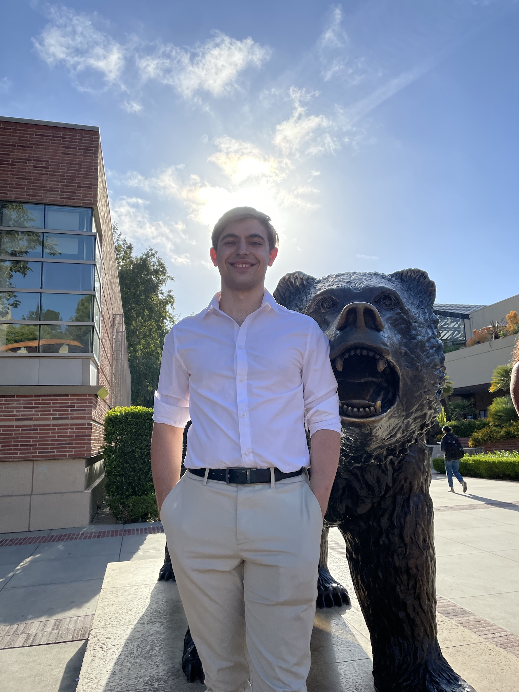

Martin Lubomir Bourdev

I'm a senior at UCLA studying Bioengineering with a minor in Bioinformatics. I'm originally from the Bay Area, having lived in South San Jose, West San Jose, and Mountain View. I'm also the treasurer of the UCLA chapter of the Alpha Epsilon Pi fraternity, managing a yearly budget of almost $200,000. At UCLA, I'm a technical team member of the Biomedical Engineering Society, team lead of CruX Neurotechnology, and researcher at the Abramson Lab in the Physiology Department. I am currently working at Amgen in Thousand Oaks on the Process Development team.
Links
Projects
Neurotechnology
🤕 ThetaFlow: Measuring Cognitive Load with EEG 🧠 Classifying Motor Imagery from EEG 🦾 EMG-Controlled Computer Bioengineering
🧬 An Algorithm to Find Mutations in a DNA Sequence 🦵 A Smart Knee Brace Computer Science
🃏 The Card Game of Set 🐟
The Card Game of Fish Hobbies
🇺🇸 UCLA Bruin Political Review Articles 🍻
Brewing Journal Work Experience
2023: Amgen : Process Development Intern (Thousand Oaks, CA)
2022: Intl. Flavors and Fragrances : Bioscience Intern (Palo Alto, CA)
2021: Zoetis : Production Intern (Union City, CA)
2020: Underwriters Laboratories : Wireless Testing Technical Support Intern (Fremont, CA)
Essays
Skills
🖥️ Software : Java, C++, Python, PyTorch, HTML/CSS, Signal Processing, Algorithms, Data Structures, Machine Learning, Artificial Intelligence
🧬 Biotechnology : Cell Culture, PCR, Gel Electrophoresis, Plasmid Construction, CRISPR/Cas9, E. coli , B. subtilis
🧠 Neurotechnology : OpenBCI Headset, Bandpass Filter, Artifact Removal, Fourier Transform, Spectral Power Analysis, Wiener Filter, Kalman Filter
⚗️ Analytical Chemistry : Liquid Chromatography, Gas Chromatography, Mass Spectroscopy, HPLC
🔬 Abramson Lab : Yeast culture, fermentation, Western Blot, brewing
⚡ Electrical Engineering : Arduino, Circuitry
👅 Languages : English, Mandarin, Spanish, Bulgarian
🏃 Athletics : Bench Press: 160 lbs; 800 Meters: 2:21.24; 1600 Meters: 5:32.96; 3 miles: 19:47.0
Books I Live By
Secondhand Time by Svetlana AlexievichNever Split the Difference by Chris VossSteve Jobs by Walter IsaacsonLifespan by David SinclairGenentech by Sally Smith HughesDance to the Tune of Life by Denis NobleDeep Nutrition by Catherine Shanahan
UCLA Courses
Bioengineering
100. Bioengineering Fundamentals
C105. Engineering of Bioconjugates
C107. Polymer Chemistry for Bioengineers
110. Biotransport and Bioreaction Processes
120. Biomedical Transducers
CM145. Molecular Biotechnology for Engineers
167L. Bioengineering Laboratory
175. Machine Learning and Data-Driven Modeling in Bioengineering
176. Principles of Biocompatibility
Computer Science
CM121. Introduction to Bioinformatics
CM122. Algorithms in Computational Genomics
180. Introduction to Algorithms and Complexity
Electrical Engineering
100. Electrical and Electronic Circuits
C143A. Neural Signal Processing